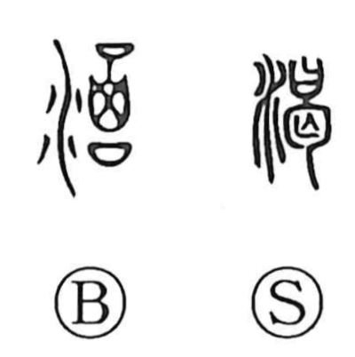

渇

Uncategorized
Kun: kawaku, tsukiru | On: katsu
thirst ・ run dry ・ crave
Explanation
This is a phono-semantic character: the water element signals matters of fluid and the throat, while the phonetic 曷 (katsu) supplies the sound and imagery. In Shirakawa’s reading, 曷 combines the form of bones of the dead (勾) with a sacred receptacle containing a written prayer (日), evoking an intense ritual of supplication in which the bones act as a spirit of malediction. From the scene of crying out in fervent prayer until the throat goes dry, the meaning of thirst and running dry arose; by extension, the graph also came to express craving or devouring, overlapping with the sense later written with 愒. The older form is 渴.